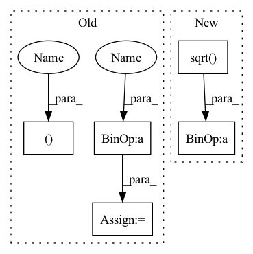

Pattern ID :1110
Before Change
Returns:
output <torch.Tensor>: (batch_size,) or ()
batch_size, num_classes = input.size()
scale, margin = self.scale, self.margin
eps = self.eps
input = torch.clamp(input, -1+eps, 1-eps)
theta = torch.arccos(input) // (batch_size, num_classes)
theta_modified = theta + margin // (batch_size, num_classes)
mesh = torch.arange(0, num_classes).unsqueeze(dim=0) // (1, num_classes)
mesh_target = target.unsqueeze(dim=1) // (batch_size, 1)
condition = mesh==mesh_target // (batch_size, num_classes)
theta_modified = torch.where(condition, theta_modified, theta)
cos = scale * torch.cos(theta_modified) // (batch_size, num_classes)
indices = num_classes * torch.arange(batch_size) + target // (batch_size,)
cos_target = torch.take(cos, indices) // (batch_size,)
loss = - cos_target + torch.logsumexp(cos, dim=1)
After Change
eps = self.eps
cos_th = input
sin_th = torch.sqrt( 1 - cos_th**2 + eps)
cos_phi = cos_th * cos_m - sin_th * sin_m // (batch_size, num_classes)
// For target class
if self.easy_margin:
cos_phi = torch.where(cos_th < 0, cos_th, cos_phi) // (batch_size, num_classes)
else:
cos_phi = torch.where(cos_th > self.cos_pi_m, cos_th - margin, cos_phi) // (batch_size, num_classes)
// For non-target class
mask = F.one_hot(target, num_classes=num_classes) // (batch_size, num_classes)
input = scale * (mask * cos_phi + (1.0 - mask) * cos_th)
loss = F.cross_entropy(input, target, reduction="none")
if batch_mean:In pattern: SUPERPATTERN
Frequency: 3
Non-data size: 5
Instances Fragment ID: 4030524
Project Name: tky823/dnn-based_source_separation
Commit Name: a4bde6a5794ce4ec526ff846e07a4de4de24ab04
Time: 2022-02-10
Author: delta9guitar97@gmail.com
File Name: src/criterion/metric_learn.py
M Class Name: AdditiveAngularMarginLoss
N Class Name: AdditiveAngularMarginLoss
M Method Name: forward(4)
N Method Name: forward(4)
M Parent Class: nn.Module
N Parent Class: nn.Module
M File Name: src/criterion/metric_learn.py
N File Name: src/criterion/metric_learn.py
M Start Line: 168
M End Line: 184
N Start Line: 181
N End Line: 199
Before Change
v = self.NIN_2(h)
w = torch.einsum("bchw,bcij->bhwij", q, k) * (int(C) ** (-0.5))
w = torch.reshape(w, (B, H, W, H * W))
w = F.softmax(w, dim=-1)
w = torch.reshape(w, (B, H, W, H, W ))
h = torch.einsum("bhwij,bcij->bchw", w, v)
h = self.NIN_3(h)
return x + hAfter Change
attn = torch.einsum(
"bnchw, bncyx -> bnhwyx", query, key
).contiguous() / math.sqrt( channel)
attn = attn.view(batch, n_head, height, width, -1)
attn = torch.softmax(attn, -1)
attn = attn.view(batch, n_head, height, width, height, width)
out = torch.einsum("bnhwyx, bncyx -> bnchw", attn, value).contiguous()
out = self.out(out.view(batch, channel, height, width))
return out + input
class ResnetBlocWithAttn(nn.Module): Fragment ID: 4030509
Project Name: janspiry/image-super-resolution-via-iterative-refinement
Commit Name: 1a5a8bc409a8b8e072eb2bf25330d4662fd279c4
Time: 2021-08-09
Author: lw_jiang@foxmail.com
File Name: model/ddpm_modules/unet.py
M Class Name: AttnBlock
N Class Name: SelfAttention
M Method Name: forward(2)
N Method Name: forward(2)
M Parent Class: nn.Module
N Parent Class: nn.Module
M File Name: model/ddpm_modules/unet.py
N File Name: model/ddpm_modules/unet.py
M Start Line: 125
M End Line: 136
N Start Line: 111
N End Line: 128
Before Change
Returns:
output <torch.Tensor>: (batch_size,) or ()
batch_size, num_classes = input.size()
scale, margin = self.scale, self.margin
eps = self.eps
input = torch.clamp(input, -1+eps, 1-eps)
theta = torch.arccos(input) // (batch_size, num_classes)
theta_modified = theta + margin // (batch_size, num_classes)
mesh = torch.arange(0, num_classes).unsqueeze(dim=0) // (1, num_classes)
mesh_target = target.unsqueeze(dim=1) // (batch_size, 1)
condition = mesh==mesh_target // (batch_size, num_classes)
theta_modified = torch.where(condition, theta_modified, theta)
cos = scale * torch.cos(theta_modified) // (batch_size, num_classes)
indices = num_classes * torch.arange(batch_size) + target // (batch_size,)
cos_target = torch.take(cos, indices) // (batch_size,)
loss = - cos_target + torch.logsumexp(cos, dim=1)
if batch_mean:
loss = loss.mean(dim=0)After Change
eps = self.eps
cos_th = input
sin_th = torch.sqrt( 1 - cos_th**2 + eps)
cos_phi = cos_th * cos_m - sin_th * sin_m // (batch_size, num_classes)
// For target class
if self.easy_margin:
cos_phi = torch.where(cos_th < 0, cos_th, cos_phi) // (batch_size, num_classes)
else:
cos_phi = torch.where(cos_th > self.cos_pi_m, cos_th - margin, cos_phi) // (batch_size, num_classes)
// For non-target class
mask = F.one_hot(target, num_classes=num_classes) // (batch_size, num_classes)
input = scale * (mask * cos_phi + (1.0 - mask) * cos_th)
loss = F.cross_entropy(input, target, reduction="none")
if batch_mean: Fragment ID: 4030526
Project Name: tky823/dnn-based_source_separation
Commit Name: a4bde6a5794ce4ec526ff846e07a4de4de24ab04
Time: 2022-02-10
Author: delta9guitar97@gmail.com
File Name: src/criterion/metric_learn.py
M Class Name: AdditiveAngularMarginLoss
N Class Name: AdditiveAngularMarginLoss
M Method Name: forward(4)
N Method Name: forward(4)
M Parent Class: nn.Module
N Parent Class: nn.Module
M File Name: src/criterion/metric_learn.py
N File Name: src/criterion/metric_learn.py
M Start Line: 168
M End Line: 184
N Start Line: 181
N End Line: 199
Before Change
Returns:
loss () or (batch_size,)
batch_size, embedded_dims, n_bins, n_frames = input.size()
batch_size, n_sources, n_bins, n_frames = target.size()
input = input.view(batch_size, embedded_dims, n_bins * n_frames)
target = target.view(batch_size, n_sources, n_bins * n_frames)
input_transposed = input.permute(0, 2, 1).contiguous() // (batch_size, n_bins * n_frames, embedded_dims)
target_transposed = target.permute(0, 2, 1).contiguous() // (batch_size, n_bins * n_frames, n_sources)
affinity_input = torch.bmm(input, input_transposed) // (batch_size, embedded_dims, embedded_dims)
affinity_target = torch.bmm(target, target_transposed) // (batch_size, n_sources, n_sources)
affinity_correlation = torch.bmm(input, target_transposed) // (batch_size, embedded_dims, n_sources)
loss_input = torch.sum(affinity_input**2, dim=(1,2))
loss_target = torch.sum(affinity_target**2, dim=(1,2))
loss_correlation = torch.sum(affinity_correlation**2, dim=(1,2))
loss = loss_input + loss_target - 2 * loss_correlation // (batch_size,)
if batch_mean:
loss = loss.mean(dim=0) // ()After Change
YY = torch.bmm(Y, trans_Y) // (batch_size, n_samples, n_samples)
YY1 = YY.sum(dim=-1) // (batch_size, n_samples)
D = torch.diag_embed(1 / torch.sqrt( YY1 + eps) ) // (batch_size, n_samples, n_samples)
VD, YD = torch.bmm(trans_V, D), torch.bmm(trans_Y, D) // (batch_size, embed_dim1, n_samples), (batch_size, embed_dim2, n_samples)
VDV, YDY = torch.bmm(VD, V), torch.bmm(YD, Y) // (batch_size, embed_dim1, embed_dim1), (batch_size, embed_dim2, embed_dim2)
VDY = torch.bmm(VD, Y) // (batch_size, embed_dim, embed_dim2) Fragment ID: 4030521
Project Name: tky823/dnn-based_source_separation
Commit Name: 8860d8d92de4ba4390fa89247619810b0c821fe6
Time: 2021-11-22
Author: delta9guitar97@gmail.com
File Name: src/criterion/deep_clustering.py
M Class Name: AffinityLoss
N Class Name: AffinityLoss
M Method Name: forward(4)
N Method Name: forward(4)
M Parent Class: nn.Module
N Parent Class: nn.Module
M File Name: src/criterion/deep_clustering.py
N File Name: src/criterion/deep_clustering.py
M Start Line: 19
M End Line: 34
N Start Line: 26
N End Line: 37